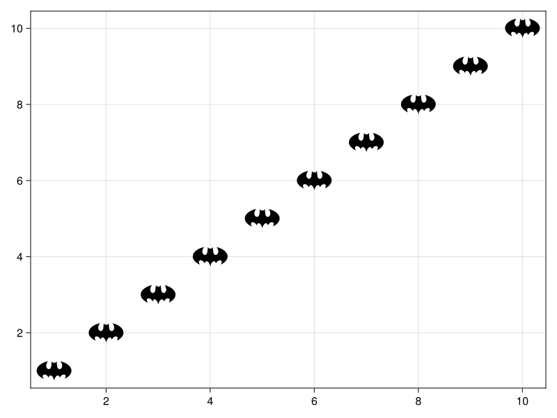
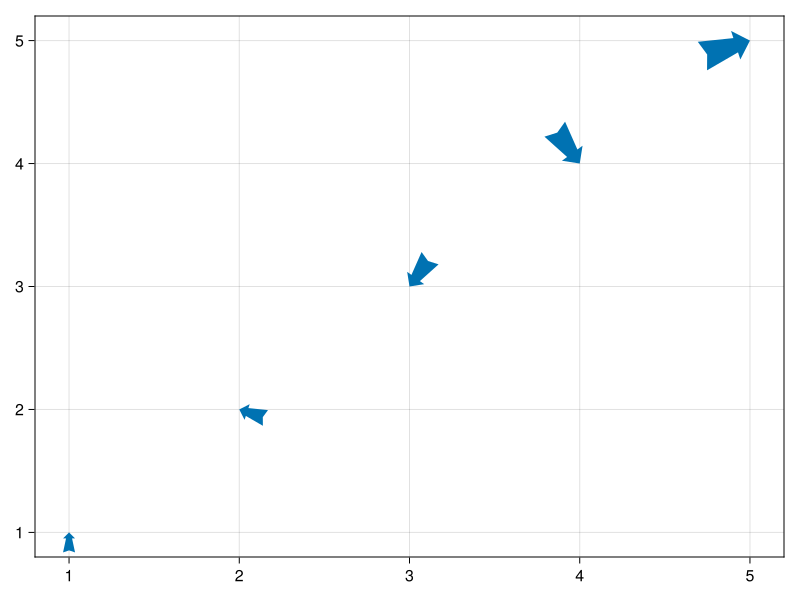
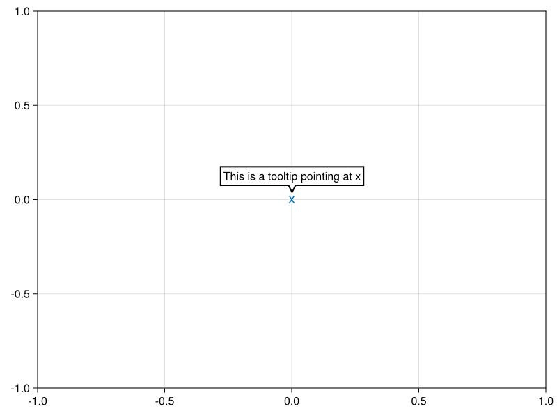

We're happy to announce Makie's latest feature release: v0.18! A lot of effort has gone into this version, the longest standing PR saw 1.5 years of continued work! We have added exciting new features, fixed many issues, and made important improvements to the backends which are going to increase performance and stability going forward.
Below is a short summary of the most relevant changes in no particular order:
The new
tricontourf plot can be used to plot contour bands for points in arbitrary configuration, compared to
contourf which requires a grid. You can pass your own triangulation data or use the default Delaunay triangulation.
The new
hexbin plot allows to visualize the density of points in hexagonal cells. Compared to
heatmap etc., the hexagonal layout helps to break up horizontal and vertical lines that can be misleading when interpreting the data.
You can now use arbitrary shapes as scatter markers, which can be defined using the
BezierPath object. For convenience, such paths can also be constructed from svg path strings.
This change allowed us to improve the default set of markers, which previously relied on the glyphs supplied by Makie's default fonts and which have been chosen to match better visually.
One possible real-world application are wind barb plots which are common in geography. Here's a not-so-real-world example where we plot bat symbols read from an svg path string.
using CairoMakie
batsymbol_string = "M96.84 141.998c-4.947-23.457-20.359-32.211-25.862-13.887-11.822-22.963-37.961-16.135-22.041 6.289-3.005-1.295-5.872-2.682-8.538-4.191-8.646-5.318-15.259-11.314-19.774-17.586-3.237-5.07-4.994-10.541-4.994-16.229 0-19.774 21.115-36.758 50.861-43.694.446-.078.909-.154 1.372-.231-22.657 30.039 9.386 50.985 15.258 24.645l2.528-24.367 5.086 6.52H103.205l5.07-6.52 2.543 24.367c5.842 26.278 37.746 5.502 15.414-24.429 29.777 6.951 50.891 23.936 50.891 43.709 0 15.136-12.406 28.651-31.609 37.267 14.842-21.822-10.867-28.266-22.549-5.549-5.502-18.325-21.147-9.341-26.125 13.886z"
batsymbol = BezierPath(batsymbol_string, fit = true, flipy = true)
scatter(1:10, marker = batsymbol, markersize = 50, color = :black)

Another common requirement are custom arrows and other shapes used to annotate plots. These can be constructed using path primitives including arcs and bezier curves, or specified as simple polygons made from line segments.
using CairoMakie
arrow_path = BezierPath([
MoveTo(Point(0, 0)),
LineTo(Point(0.3, -0.3)),
LineTo(Point(0.15, -0.3)),
LineTo(Point(0.3, -1)),
LineTo(Point(0, -0.9)),
LineTo(Point(-0.3, -1)),
LineTo(Point(-0.15, -0.3)),
LineTo(Point(-0.3, -0.3)),
ClosePath()
])
scatter(1:5,
marker = arrow_path,
markersize = range(20, 50, length = 5),
rotations = range(0, 2pi, length = 6)[1:end-1],
)

In the past, MathTeXEngine.jl could not use some commonly required glyphs, because these were not representable using Unicode
Chars. By reworking Makie's backend to specify glyphs directly with their integer offsets, we gained the ability to use the full breadth of available characters. The new capabilities are available from MathTeXEngine v0.5 on.
DataInspector got a refactor to simplify future updates. Along the way we cleaned up and moved the tooltip code to a
tooltip(pos, text) recipe. Many of the attributes of
tooltip can also be passed to
DataInspector.
using CairoMakie
fig, ax, p = scatter(Point2f(0), marker = 'x', markersize = 20)
tooltip!(Point2f(0), "This is a tooltip pointing at x")
fig

We also added a commonly requested feature - being able to adjust the displayed text on a per-plot basis.
DataInspector will now check if a hovered plot has a
inspector_label attribute and call
plot.inspector_label[](plot, index, position) to get text to display if it is available. For example:
labels = ["first", "second", "third"]
fig, ax, p = scatter(rand(3), inspector_label = (plot, i, pos) -> labels[i])
DataInspector(fig)
nothing
Another small change is that tooltips now persist when alt-tabbing out of the Makie window. This should make it a bit easier to copy or compare data.
Fix Heisenbug for multiple windows, where shaders got compiled for the wrong window (OpenGL context), which works fine on most nvidia hardware but may crash other OpenGL implementations.
Due to the above fix, it became clear that the scene clean up after displaying on a screen wasn't happening correctly, which got fixed
enable_SSAO/
enable_FXAA/
transparency_weight_scale were a global, which was fine until we got multi window support. Now, ssao/fxaa/oit are screen options, which you can set via e.g.
GLMakie.activate!(ssao=true) or per screen via
GLMakie.Screen(ssao=true).
new backend argument, allowing one to save a file with a specific backend (
save("plot.png", figure; backend=GLMakie)). Applies also to
record,
display and
colorbuffer.
record,
display,
colorbuffer and
save now support forwarding all
Backend.Screen options, which enables you to use
record(...; px_per_unit=2.0) for higher resolution videos with CairoMakie, or e.g.
save(...; backend=GLMakie, ssao=true).
All backend screen types have been renamed to
Backend.Screen, which was previously not the case. This shouldn't break too much code, since the only backend where one was interacting with
Screen is GLMakie, which was already named
Screen. In the future, it will be more common to interact with
Screen directly for all backends. Use
?Backend.Screen to see all screen options.
We gained some substantial speed improvements for
record, by reusing more screen state and directly writing out to a file via ffmpeg
#2231.
PR: 171.387 ms (57775 allocations: 4.93 MiB)
master: 322.244 ms (50714 allocations: 32.58 MiB)
PR: 647.093 ms (3076666 allocations: 174.11 MiB)
master: 807.175 ms (3070484 allocations: 335.48 MiB)
PR: 1.450 s (2200125 allocations: 189.61 MiB)
master: 1.628 s (2192751 allocations: 279.25 MiB)
adding more tests for display / record
CairoMakie now opens a browser/os-image-viewer when plotpane is disabled or
display(fig) is called explicitely.
deprecation of
Makie.inline!(false/true) which was only disabling show, which isn't very helpful (can just be done by
fig; or
return nothing) and was instead making trouble accidantely disabling show.
deprecating
GLMakie.set_window_config!(; screen_config...) in favor of
GLMakie.activate!(; screen_config...).
deprecating internal function
backend_display in favor of
display.
cleaning up
colorbuffer(figlike) and
colorbuffer(screen), making it faster and more consistent across backends.
clean up of unused code and making code more consistent between backends
backend is now registered as module not it's own
GLMakieBackend struct. Deprecated internal global
current_backend in favor of
CURRENT_BACKEND and renaming
register_backend! to
set_active_backend!. One can now query the current backend via
Makie.current_backend()::Module
Backend.activate!(; screen_config...) now always accepts attributes for the backends screen config, and writes it to the theme. Alternatively, one can use
set_theme!(Backend=(screen_config...,))
better warnings for wrong ffmpeg flags in
record/
Record